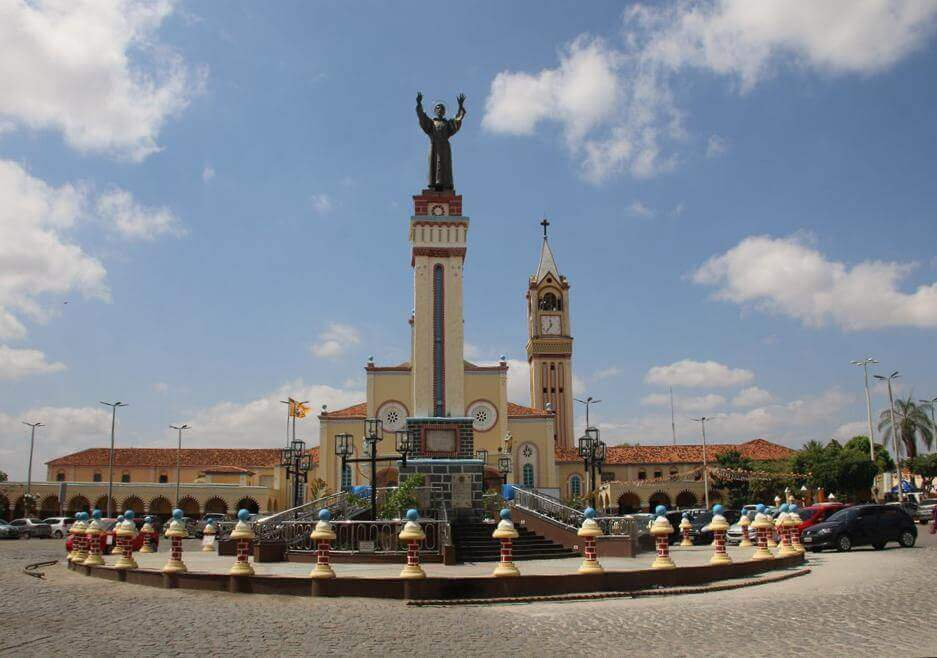
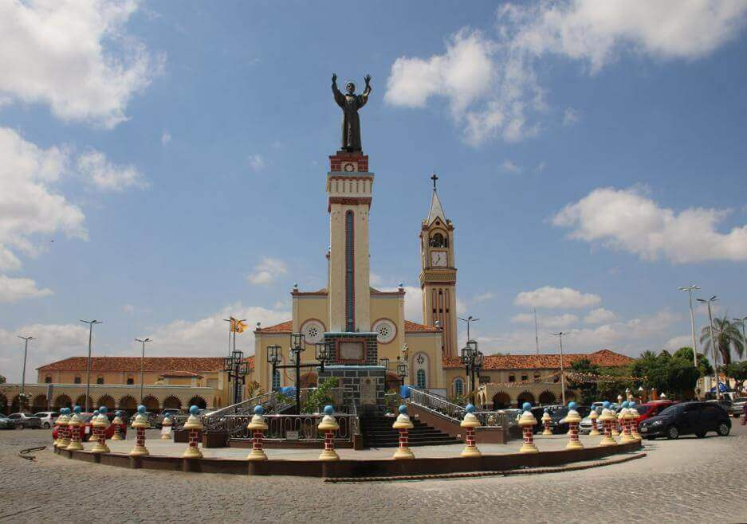
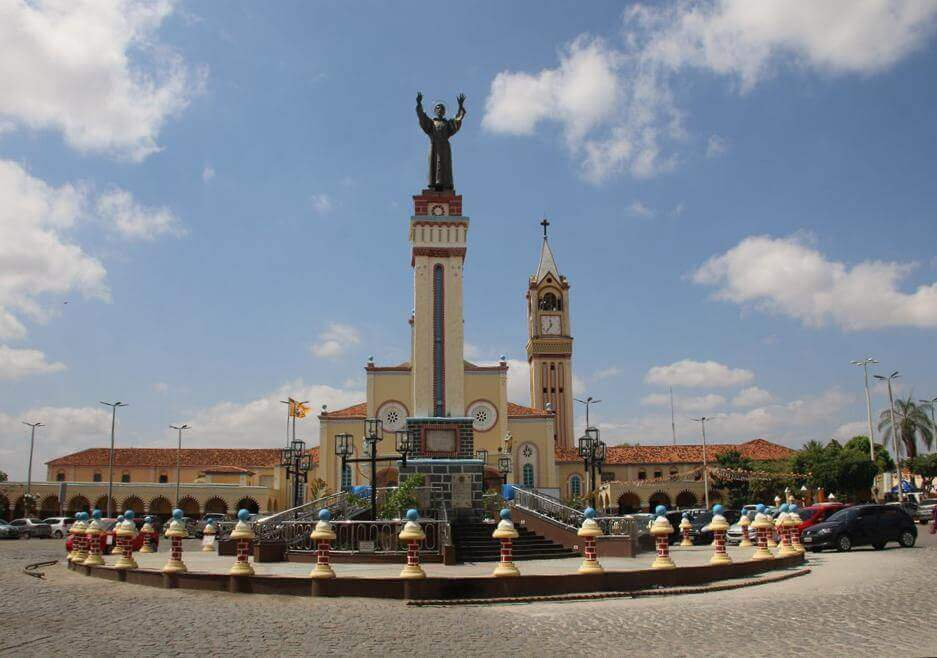

Fotos e Sua Localização

 

O Santuario dos Repteis está localizada em Juazeiro do Norte, Ceará. Para mais detalhes, veja o mapa abaixo:
O Santuário Répteis e Cia em Juazeiro do Norte é o lugar perfeito para quem ama animais e quer conhecer mais sobre eles. Afinal, além de atuar como uma espécie de Zoológico, também permite que o público tenha um contato mais próximo com os bichos. No espaço, você pode ver os mais diversos répteis e se aprofundar em suas características, como alimentação e reprodução. Ou seja, é o passeio perfeito para fazer com as crianças e reforçar o conhecimento que estão tendo em sala de aula.

O Santuario dos Repteis está localizada em Juazeiro do Norte, Ceará. Para mais detalhes, veja o mapa abaixo: